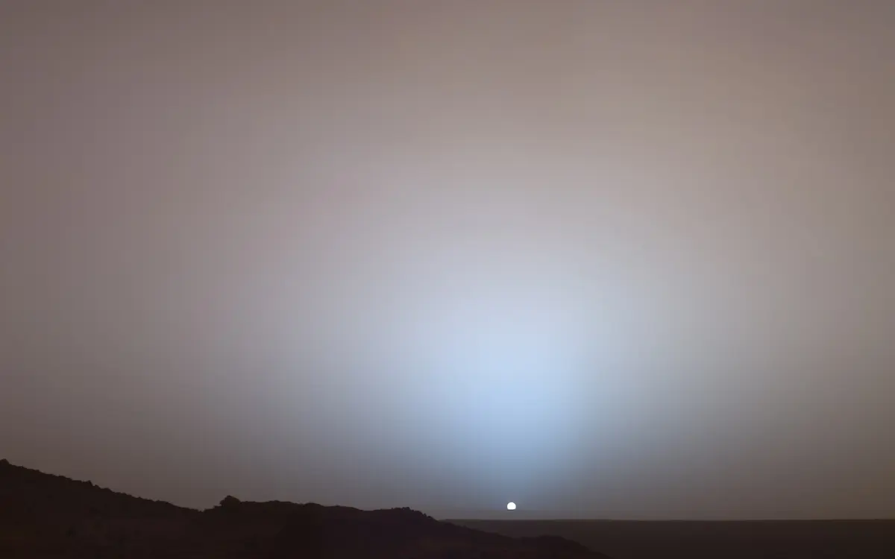
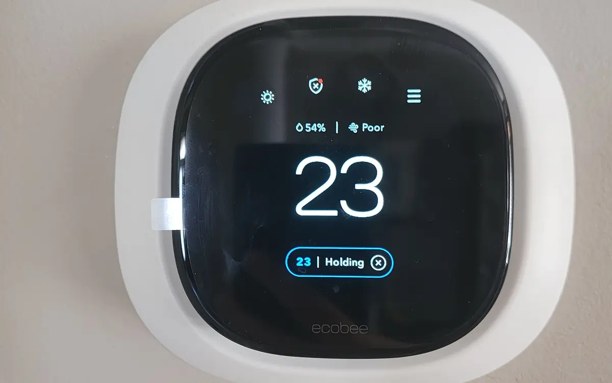

Full article · LinkedIn
No, Elon Musk Is Not Bringing Us to Mars
A critical look at the marketing, infrastructure, and environmental assumptions behind popular promises of Mars settlement.

There is something hypnotic about Elon Musk’s vision of Mars. Maybe it’s the images: glossy renders of red plains dotted with solar domes and sleek white ships; maybe it’s the promise itself, clean and simple: if Earth fails us, we go elsewhere. It’s a plan with narrative symmetry. Like some ancient ark story for the Space Age, it imagines a future where humanity can transcend planetary collapse and begin again among the stars. And at the center of that fantasy is one man, telling us it’s possible.
But no—Elon Musk is not bringing us to Mars. Not the way he says. Not soon. And certainly not in time to save us from ourselves.
Musk's stated vision is enormous: land the first crew on Mars by the end of this decade, build a permanent, self-sustaining city of one million people by 2050, and, eventually, terraform the entire planet. All of this hinges on the successful development of Starship—SpaceX's flagship rocket system—and a series of uninterrupted launches, landings, fuel syntheses, and autonomous builds on a planet that has never once supported human life.
To believe this is feasible is to overlook physics, biology, history, economics, and time itself.
As of 2025, Starship has not completed a successful orbital test flight and return. Mars remains, even for robots, an engineering gauntlet. Its thin atmosphere complicates descent; its radiation levels, without a protective magnetic field, are lethally high; its gravity, roughly one-third of Earth’s, introduces risks we barely understand. No human has ever set foot beyond the Moon. To leap directly to colonizing Mars is not ambition—it is science fiction.
And the costs? Musk's own estimates place a Martian city between $100 billion and $10 trillion. The ISS, by comparison, cost $100 billion to support six people in low Earth orbit. A Mars colony would demand exponentially more: advanced life support, radiation shielding, agriculture, manufacturing, and an industrial base that can survive without Earth. Terraforming—Musk's more speculative pitch—is pure fantasy. NASA-backed research shows Mars simply lacks the CO2 needed to create an atmosphere.
"Nuke Mars," Musk once tweeted. But even that wouldn't be enough.
To be clear, none of this is to deny Musk’s contributions. SpaceX has transformed rocketry. It has brought down launch costs, revived public excitement, and forced traditional aerospace to evolve. Starship, if it reaches its promised capabilities, may indeed carry cargo and, one day, humans to the Martian surface.
But a self-sufficient city? A second cradle for humanity? Not by 2050. Not even close. The idea that Mars can become a viable escape hatch from Earth's problems is not a plan—it's a distraction.
Because the truth is: Earth is the only planet we can live on. It is our only home. And it is dying in slow motion.
The climate crisis is not centuries away. It is here, accelerating. According to the IPCC, we are on track to surpass 1.5°C of warming by the early 2030s. Every fraction of a degree beyond that brings deeper droughts, deadlier heat, and irreversible loss.
The Amazon. The glaciers. The coral reefs. This isn’t speculative. It is already happening.
The solutions, unlike those for Mars, are not theoretical. Solar, wind, electric transport, reforestation, sustainable agriculture—all of these exist, now. They are scalable. They are cost-effective. And they work. What is missing is not engineering marvels but political will and collective action.
Mars is a dream. Earth is a responsibility. And no billionaire, no matter how "brilliant" or bold, can build us a new home before we lose this one.
So no, Elon Musk is not bringing us to Mars. At least not in time.
But maybe that’s not what matters most. Maybe the point is not whether we ever reach Mars. Maybe the point is whether we can learn to protect the only world that never needed a rocket to make it livable.
Because here’s the truth: If we cannot save Earth, we will not survive Mars.
About this project
See the assignment, process, and Paul’s contribution.
Paul selected, researched, and wrote the technology commentary independently.
Related work
Continue through the subject.
How Much Did Katy Perry’s Rocket Ride Really Cost the Climate?
A closer look at the environmental footprint behind a brief celebrity spaceflight and the spectacle surrounding it.

How Artificial Intelligence Is Reshaping Corporate Sustainability
AI has environmental costs, but it is also changing how companies measure, model, and manage sustainability work.

I’m Sorry, but Your Smart Thermostat Won’t Save You
Consumer devices can reduce energy use, but they cannot substitute for the systemic changes climate policy requires.